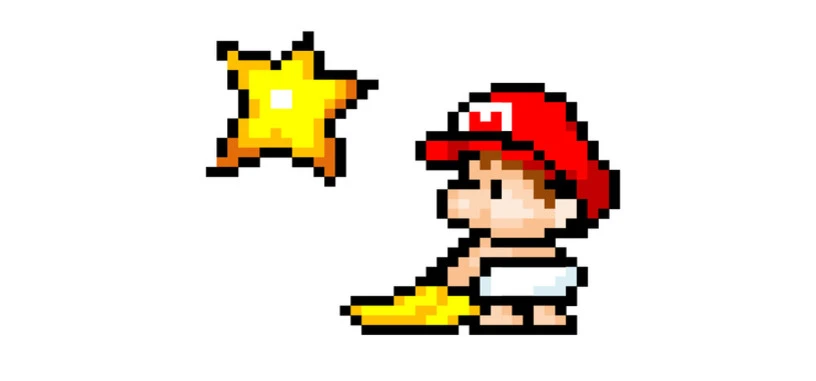

Revive la Magia de los 8 Bits
¿Recuerdas esa emoción única de encender tu consola, escuchar los primeros píxeles cobrar vida, y sumergirte en mundos llenos de aventuras con gráficos sencillos pero encantadores? 🌟 Los juegos 8-bit no solo marcaron una época; crearon un legado.Aquí, celebramos la era dorada del gaming. Desde héroes pixelados hasta melodías chiptune inolvidables, esta página está dedicada a revivir y compartir esa magia que nos hizo soñar.
